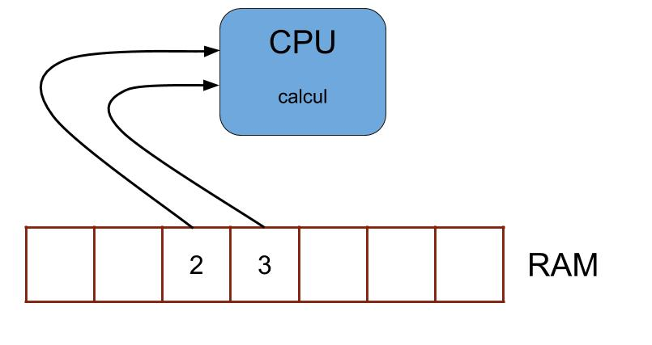

Programmation - TP1
05/09/2017
Présentation
Axel Bonnet
professor.bonnet@gmail.com
Organisation
32 heures (ou pas)
- 05/09 : TP1
- 12/09 : TP2
- 19/09 : TP3
- 26/09 : pas cours
- 03/10 : TP4
- 10/10 : Examen 1
- 17/10 : TP5
- 24/10 : Examen 2
- ??/11 : Bonus
Fonctionnement
- TP en salle machine
- (Avec un peu de magistral)
- (Et une partie sans machine)
Programme du TP
- Introduction à la programmation
- Les algorithmes
- TP : Premiers problèmes
- TP : Hello world
Programmation
- Avez vous déjà programmé ?
- Qu'est-ce qu'un programme ? En connaissez-vous ?
Les programmes
- Il y a des programmes partout !
- Word, LoL, Chrome, Facebook, Snapchat
- Four, ascenseur, voiture
- CB, souris, objets connectés
- Internet, etc
Vous aurez peut-être à en créer un jour
Software / Hardware
- Un programme est virtuel (Software)
- Opposé au matériel physique (Hardware)
- Ils sont complémentaires

Hardware
- Exemples de composants ?
- Processeur, RAM, disque dur, carte graphique, carte mère, etc
- Processeur et RAM indispensables
- RAM : grand entrepot
- Processeur (aka CPU) : Calculateur basique, sans mémoire
Fontionnement minimaliste
2+3 ?


Lien avec un programme


Le langage machine
- Le programme doit donner ses instructions au CPU
- Le CPU ne comprend qu'un langage très basique
- C'est un langage binaire (0/1), impossible à écrire manuellement
- Des langages de programmation ont été créés (beaucoup)
La compilation
Converti un programme en langage machine

Langage de programmation
- Ils sont nécessaires pour produire rapidement des programmes
- Différents niveaux de langages
- Assembleur, C, C++, Java, Python, Javascript...
Le C

- 1972
- Le papa de tous les langages
Les algorithmes
- Pourquoi ?
- On crée des programmes pour résoudre des problèmes
- Calcul d'aire, recherche d'itinéraire
- Envoyer un tweet, détection de visage
- Un algorithme est une solution du problème
- Un programme permet de le faire traiter à une machine (avec un langage informatique)
Les algorithmes (bis)
Qu'est-ce qu'un algorithme ?
- Une recette qui permet de résoudre un problème
- Doit être clair, non-ambigü
- Peut être adapté très facilement en langage informatique
Langage d'algorithme
- Très proche d'un langage de programmation
- Non standard
- Définition classique
Exemple
Kenneth a 875€ de dépenses fixe par mois, dont 72% pour son loyer. Son loyer va augmenter de 10%, combien va-t-il devoir payer désormais ?
TP : Premiers problèmes
- Feuille/stylo !
TP : Hello World
- Demo
- Analyse des fichiers
TP 2 : Application en C
- Déclaration de variables en C
- Affectation et calculs
TP 3 : Calcul de la surface d'un triangle

TP 4 : Calcul du volume d'un cylindre creux
A = π/4 x h (D² – d²)

Description du langage C
programme minimal